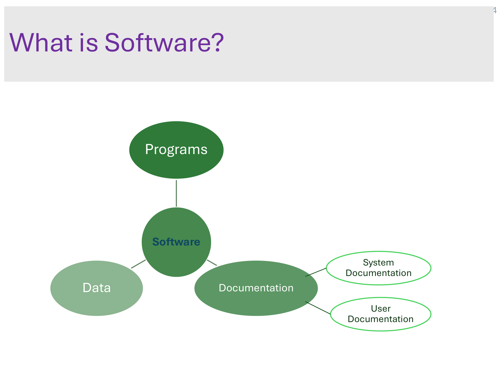
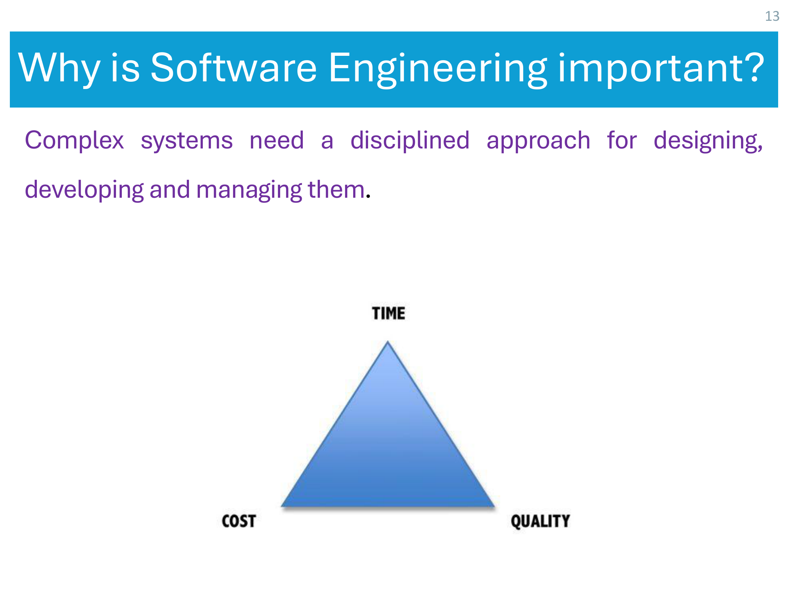

Your Final-Exam
Software Engineering Map
Lecture 1 Foundations & Sheet 1 asked for — explained in the simplest English, with diagrams, examples, and interactive quizzes for every MCQ.
What is Software & Software Engineering?
1. What is software?
Software is not just the code (programs). The slides define it as everything below — programs PLUS the documents that come with them.

2. What is Software Engineering?
Software Engineering is an engineering discipline concerned with all aspects of software production — from the very early idea (specification) all the way to maintaining it after people are using it.
Engineering discipline
Use the right theories & methods to solve problems, while respecting organizational and financial constraints (time, money, people).
All aspects of production
Not just writing code — also project management, and building tools & methods that support development.
- Software = programs + data + documentation.
- SE = engineering discipline covering all aspects of software production.
- Economies of all developed nations depend on software; software spending is a big fraction of GNP (Gross National Product).
The FAQ Tables
These two tables are guaranteed exam material. Memorise the short answers — they are written exactly how the professor wants them.
Slide 8 — Core FAQ
| Question | Answer (simple) |
|---|---|
| What is software? | Computer programs + associated documentation. Can be for a specific customer or a general market. |
| Attributes of good software? | Delivers required functionality & performance, and is maintainable, dependable, usable. |
| What is software engineering? | An engineering discipline concerned with all aspects of software production. |
| Fundamental SE activities? | Specification, Development, Validation, Evolution. |
| SE vs Computer Science? | CS = theory & fundamentals. SE = practicalities of developing & delivering useful software. |
| SE vs System Engineering? | System engineering = all of a computer-based system (hardware + software + process). SE is a part of it. |
Slide 9 — Challenges, Costs & the Web
| Question | Answer (simple) |
|---|---|
| Key challenges? | Coping with increasing diversity, demands for reduced delivery times, and building trustworthy software. |
| Costs of SE? | Roughly 60% development, 40% testing. For custom software, evolution costs often exceed development costs. |
| Best techniques & methods? | Different systems need different methods — games → prototypes, safety-critical → complete, analyzable spec. No single "best" method. |
| Differences the web made? | Brought software services and highly distributed, service-based systems; advanced programming languages & software reuse. |
Essential Attributes of Good Software
Four attributes describe what makes software "good". Mnemonic: spell M-D-E-A (it's even highlighted with colored first letters in the slide).
Maintainability
Written so it can evolve to meet customers' changing needs. Change is inevitable in business — so software must be easy to change.
Dependability & Security
Reliability + security + safety. Must not cause physical or economic damage if it fails, and malicious users can't access or damage it.
Efficiency
No wasteful use of resources — memory, processor cycles. Includes responsiveness, processing time, memory utilisation.
Acceptability
Acceptable to the target users: understandable, usable, and compatible with other systems they already use.
The 3 Main Design Concerns
Why is SE important? Because complex systems need a disciplined approach for designing, developing and managing them. When you design any software you constantly balance three things:

Time
How fast can it be delivered?
Cost
How much money & resources?
Quality
How good & reliable is it?
Software Crises — 3 Real Disasters
A "software crisis" = projects that were Late, Over budget, Unreliable, Hard to maintain, Performed poorly (slide 14). These three famous cases prove why SE matters.
Computer glitch delays flights ✈️
- A glitch in an air-traffic-control system in Scotland delayed dozens of UK flights.
- The agency switched to backup equipment while engineers fixed it.
- No safety issue — but caused big delays. (Fixed within hours.)
The rocket that exploded 🚀💥
- The European Space Agency spent 10 years and $7 billion.
- It crashed after only 36.7 seconds.
- Cause = an overflow error: trying to store a 64-bit number into a 16-bit space.
London Ambulance Service 🚑
- The largest ambulance service in the world — hit an overload problem.
- It couldn't track ambulances & their status → sent multiple units to some places, none to others.
- Generated many exception messages. Result: 46 deaths.
Application Types
There is no universal set of techniques for all software (this is "software engineering diversity"). The slides list 8 types of application:
Stand-alone applications
Run on a single local computer (a PC). Have all functionality, no network needed.
Interactive transaction-based
Run on a remote computer, users access from their own PCs/terminals.
Embedded control systems
Control & manage hardware devices. Probably the most common type of all.
Batch processing systems
Business systems that process large batches of inputs into outputs.
Entertainment systems
Mainly for personal use, intended to entertain the user.
Modeling & simulation
Built by scientists/engineers to model physical processes with many interacting objects.
Data collection systems
Collect data from the environment using sensors, then send it elsewhere for processing.
Systems of systems
Composed of a number of other software systems working together.
★ Quiz — Sheet 1 (15 MCQs)
Click an answer. Green = correct, red = your wrong pick (correct one also turns green). These are the exact sheet questions.
1What is the primary goal of software engineering?
2Which best defines software engineering?
3What term describes systematically developing software products?
4Which is NOT a characteristic of software?
5What distinguishes software engineering from programming?
6Which activity is NOT part of the software development process?
7Main reason for the high failure rate of software projects?
8Ability of software to perform correctly even under adverse conditions?
9What is the purpose of software modeling?
10Which is NOT a software characteristic that poses challenges to SE?
11What does "software engineering" encompass?
12Which is a characteristic of software engineering?
13Which activity is NOT typically part of the development process?
14One primary goal of SE methodologies?
15Which is NOT a challenge in software engineering?